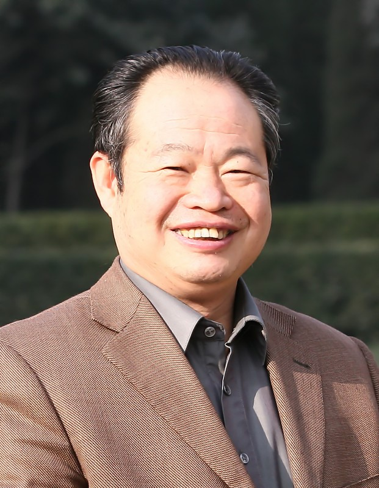

苏振武教授简介

苏振武，陕西武功人，生于1952年，西汉苏武直系后裔，陕西省高等学校教学名师，宝鸡文理学院哲学教授（三级）、高层次创新型拔尖人才、一级学科带头人，陕西省高校思想政治理论课教学指导委员会委员，东北师范大学硕士生导师、韩国大邱教育大学校客座研究员。
现任中国教育学会小学教育委员会副理事长暨西北五省区分会理事长、陕西省哲学学会苏武文化研究委员会理事长、陕西省教育学会小学管理研究委员会理事长、陕西省哲学学会马哲史研究会副理事长、宝鸡市哲学学会副会长，陕西省哲学学会、价值学会、孔子学会常务理事，《世苏武功通讯》主编，世界苏姓宗亲总会中国武功秘书处主任。受聘担任海南省苏东坡文化研究会、广东省苏东坡文化研究会名誉会长。
1983年以来，历任扶风县教育局副局长、陕西省小学教师培训中心教务处长、副主任、陕西省艺术师范学校副校长、宝鸡文理学院成人教育学院副院长、陕西省教育行政干部培训中心主任、宝鸡文理学院哲学系主任、宝鸡文理学院社会科学部主任、宝鸡文理学院哲学研究所所长、陕西省学校安全管理培训中心主任、第七届世界苏姓宗亲宗会秘书长等。
主要从事马克思主义哲学与当代中国现实问题研究，兼研中国传统文化和教育问题，2008年以来潜心研究苏武文化。先后主持并完成了陕西省政府社科规划项目、省教育厅人文社科基金等科研项目18项；先后主持并完成了陕西省高校教学团队、陕西省级精品课程等教学质量工程建设项目12项。出版《苏武精神与儒家伦理》（人民出版社2013年版）、《汉之魂：苏武精神及其当代价值》（人民出版社2009年版）、《人格气节民族魂：论苏武精神》（人民出版社2014年版）、《忠勇苏缄与道德价值》（人民出版社2016年版）、《苏武世家》（《陕西历史文化百部丛书》三秦出版社2012年版）、《人力资源开发与素质教育》（西北大学出版社2001年版）、《陕西人才开发与经营方略》（陕西人民出版社2005年版）、《周秦经济伦理与现代市场伦理》（陕西人民出版社2007年版）等学术专著18部；主编出版学术论著15部；在《人文杂志》等20余种刊物发表学术论文80余篇，被人大书报资料复印等全文转载或索引4篇。获陕西省政府优秀教学成果一等奖1项，获陕西省政府哲学社会科学成果三等奖3项；获宝鸡市政府哲学社会科学优秀成果一等奖5项，二、三等奖3项；获国家和省级学术团体科研成果一、二等奖18项。获陕西高校教学名师、陕西省先进教师等荣誉奖40余项。
苏振武教授自2008年担任第七届世苏理事会秘书长以来，全身心投入了世界苏姓宗亲联谊和文化活动，并深层次的进行苏武文化和苏姓文化研究。
在苏武文化活动方面，他率先进行苏武精神的学术研究，筹备并主持了2008年6月在咸阳和武功举办的首届苏武精神国际学术研讨会；筹备并主持了2013年4月在宝鸡和武功举办的第二届苏武精神国际学术研讨会；主持并完成了陕西省政府社科规划项目《苏武秉持的国格伦理对爱国主义的诠释与导向研究》；于2012年筹备成立了陕西省苏武文化研究会，并亲自担任会长，打造了苏武研究的平台；研究撰写并出版了《苏武精神与儒家伦理》、《苏武世家》、《汉之魂：苏武精神及其当代价值》、《人格气节民族魂：论苏武精神》等四部学术专著，公开发表了《价值诉求高度契合：苏武精神历久弥新之原因所在》等10余篇学术论文（在内部刊物发表的有关苏武的文章30余篇），首次系统的从学术层面研究并阐释了苏武精神和苏武文化，被国内外学界公认为苏武文化研究的开拓者和学科带头人。同时先后在央视《记住乡愁》、安徽卫视《百家姓-苏姓》、央视华人频道讲述了苏武精神和苏武文化，为苏武纪念馆爱国主义教育基地和廉政教育基地建设提供了文字资料和相关著作。
在苏姓文化活动方面，苏振武教授先后筹备并主持了2011年4月在眉山举行的“世界苏姓文化论坛”、主持了2012年8月在南宁举办的“苏缄文化研讨会”，参加了“苏东坡国际文化节”、“海峡苏姓文化论坛”、“厦门苏颂国际文化节”、“厦门苏缄文化研讨会”、“南宁苏缄文化论坛”等十余场学术活动并做学术发言。积极参与了《新编苏姓总族谱》的编修；纠正了许多苏姓宗祠、族谱中的不当之处；考证并编修《武功平陵系苏氏族谱》，以助苏姓谱牒研究正本清源；协助或指导了海南省苏东坡文化研究会、广东省苏东坡文化研究会、广西苏缄文化研究会、广东湛江苏辙研究会的筹备工作；并担任名誉会长。2008年10月，根据苏用发理事长（印尼）提议，《武功苏氏两会通讯》正式提升为世苏总会的报刊，定名为《世苏武功通讯》，苏振武教授受聘担任《世苏武功通讯》主编，他首次将《世苏武功通讯》过渡为月刊，将各个版面的内容与以规范，独立主持并从事编辑工作，使报纸图文并茂，充满活力。《世苏武功通讯》作为世苏总会会刊以后，已出版88期（累计103期），在秉持敦亲睦族、增进宗亲情谊、弘扬苏姓文化、服务祈祖敬贤、致力族史教育、引领奉献桑梓等方面，充分发挥了其独特的导向作用与引领功能。
苏振武教授连续8年主持国内苏氏文化与联谊工作，对世苏事业的健康发展和苏姓文化的发掘弘扬所做的积极贡献是有目共睹的，目前他在搞好宗亲事务、办好《世苏武功通讯》的同时，正在进行《历史苏武和文化苏武》丛书的研究和撰写，以求从学理和文献方面进一步发掘苏武文化，使苏武文化研究在学术界占有一席之地。
苏振武教学与科研情况
苏振武主要科研项目
1.主持陕西省哲学社会科学“十五”规划项目：《陕西人力资源向人才资源转化方略研究》（1.3+1.3万元），2002.9-2004.12，已结题。
2.主持陕西省教育厅人文社科基金项目：《中小学创新教育活动与激励机制研究》（0.8万元）2001.6-2003.12，已结题。
3.主持陕西省基础教育重点项目《中小学生创造性活动培养研究》，1999-2001，已结题。
4.陕西省社科规划项目：《苏武秉持的国格伦理对爱国主义的诠释与导向研究》，2010.9-2012.2.项目编号：10C039
5.主要参与国家社科基金项目《明清关学重要文献研究》（6.5万元），2004—2007
6.主要参与陕西省哲学社会科学“十五”规划项目：《邓小平理论与社会主义在当代中国的特殊发展道路研究》（1.3+1.3万元），2002.9-2004.12，已结题。
7.主要参与陕西省教育厅人文社科基金项目：《社会主义市场经济中的非理性现象及其对策研究》（0.8万元），2001.6-2003.12，已结题。
8.主持院级重点项目《周秦经济伦理与当代中国市场伦理建设研究》，2005.10-2006.11（2007.4报账636元）3.0万元
9.主持院级项目《周秦经济伦理与中国德性主义伦理特征的形成》2005.10-2006.11。0.1万元。
10.主持院级重点项目《可持续发展：中国发展战略的继承与超越》2007.10-2009.10.1.0万元。项目编号：zk074
苏振武主要教改项目
1.主持陕西高等学校思想政治教育研究《高校思想政治理论课实践教学长效机制研究》（2006.1-2007.12）
2.主持陕西省精品课程《邓小平理论与三个代表重要思想概论》建设。（2006-2009）
3.主持陕西省高校优秀教学团队《思想政治理论课教学团队》建设（2008-2010）。
4.主持宝鸡文理学院第三批重点建设课程“马克思主义政治经济学原理”，（2004-2007年）。
5.主持宝鸡文理学院教改项目：《哲学教学中大学生创新能力的培养》，2004-2005。
6.接替主持陕西省精品课程《马克思主义哲学原理》建设（2007-2010）。
苏振武主要科研成果
一、论文类
1.《可持续发展战略与人的全面发展》，《人文杂志》（核心），2001.3；
2.论文转载：《可持续发展战略与人的全面发展》，人大报刊复印资料《哲学原理》2000.8全文转载。
3.《试论中国特色社会主义的历史定位》，《理论导刊》（核心），2001.10
4.《唯物史观与中国特色社会主义》，《宝鸡文理学院学报》2001.4
5.《经济形态演进与社会形态发展的非对称性》，《皖西学院学报》2003年6期（第一作者）。
6.《中国经济市场化进程的基本判断与思考》，《理论导刊》（核心）2003年11期
7.论文转载：《中国经济市场化进程的基本判断与思考》，人大复印资料《社会主义经济理论与实践》2004年1期全文转载。
8.《关于构建创新教育激励机制的初步探索》，《宝鸡文理学院学报》2004年1期（第一作者）。
9.《西部地区市场化进程中非理性行为的危害与对策》，《西北大学学报》（核心）2004年3期。
10.《中国人才开发和经营的基本方略：人才资源资本化》，《理论导刊》2005年4期（核心）
11.《陕西高师院校与基础教育课程改革脱节的原因与对策》（第二作者），《理论导刊》（核心），2005.8
12.《西部地区人才资源资本化的思考与建议》《宝鸡文理学院学报》2005年2期。
13.《浅谈我国现阶段主要矛盾与基本矛盾的趋同性》，《理论学刊》（核心），2005.8
14.民对我国教育方针的丰富与发展》，《教育探索》（核心），2002．4（合作第二人）
15.增强德育实效性》，《中小学管理》（核心），2001.11
16.《“1+1”还是“1-1”——浅谈学生创造思维的培养》，《中小学管理》（核心），2000.7-8
17.《试论聚合思维与发散思维的协调发展》，《宝鸡文理学院学报》2000.3
18.《试论经济形态演进与社会形态发展的非对称性》，《西部论坛》2003.4
19.《中国科技创新的制约因素及其对策》,《宝鸡文理学院学报》2003年6期。
20.《非典肆虐期非理性行为失衡之原因与对策》，《宝鸡文理学院学报》2003年增刊。
21.《目标策划的哲学思考》，《教育策划》，2004.2
22.《塑造学生良好的个性心理素质》，《宝鸡文理学院学报》2000.8月
23.《增强政治意识，采取有效措施，切实把“三个代表”重要思想“三进”工作落到实处》，《“三个代表”与大学生》教育部专题文集，《高等教育出版社出版》。2002.9
24.《发展先进生产力是社会主义的本质要求》，《马克思主义理论与教学研究西北大学出版社，2002.8
25.《知识经济发展与中国科技创新》，《马克思主义理论与教学研究西北大学出版社，2002.8
26.论文：《以实践教学增强思想政治理论课教学的实效性》，2005年7月发表于教育部组编的专题论文集《高校思想政治理论课实践教学的探索与思考》（高等教育出版社出版）。
27.《以实践教学增强思想政治教育实效性研究》在2004年5月召开的全国高校公共理论课实践教学研讨会上交流。
28.《“减负”必然降低质量吗？---兼论减负与增效的辩证法》，《考试》，2001.1
29.《克服思维发展的片面性》《中国教育报》2000.3.18。
30.《树立超前意识，着力骨干培训》，《陕西教育》1994.8
31.《浅谈小学教师的教学基本功》，《小学教学参考资料》（核心），1995.6
32.《知识经济挑战与基础教育改革》，《陕西师范大学学报》，1999专辑
33.《高校公共理论课现状分析与模式构建》，《宝鸡文理学院学报》2006年特刊。
34.《高校公共理论课现状分析与模式构建》收录于《当代教育改革的理论与实践》。2006.12。
35.《中国现代市场伦理体系构建中传统伦理资源的承接与转换》，台湾义守大学《人文与社会》第二卷第二期，2008.6。
36.《科学发展观：中国发展战略的继承与超越》，《宝鸡文理学院学报》，2008.4。
37.《科学发展观：中国发展战略的继承与超越》，宝鸡文理学院学报，2008.4
38.《规范强化实践教学，增强思想教育实效》，《宝鸡文理学院报》，2004年12月1日，作者：苏振武。
39.《中国传统和谐社会理想的思想结晶与现实意义》，《周秦伦理文化与现代到的价值国际学术研讨会文集》，陕西人民出版社2008.12，作者：苏振武。
40.《苏武精神的道德价值与现代意义》，收录于《汉之魂：苏武精神及其当代价值》，人民出版社，2009.2。
41.《马克思哲学的实践范畴及其价值意蕴》，《价值工程》2011年5月，第30卷239 期。
42.《张载<西铭>的和谐思想及其现代价值》，《价值工程》2011年6月，第30卷240 期。
43.《中国发展战略及其价值取向的演进与思考》，《价值工程》2011年12月，第30卷259 期。
44.《马克思哲学的本体与特征及其价值取向之我见》，《宝鸡文理学院学报》2012年2月，第 卷1期。
45.《浅论儒家伦理与苏武精神之关系》，《价值工程》2012年3月，第卷3期。
46.《苏武精神道德价值的现代审视》，《新编苏氏总族谱》，学术著作篇，东北师范大学出版社，2012.9.
47.《陕西苏氏源流与变迁》，《新编苏氏总族谱》，分支脉衍篇，东北师范大学出版社，2012.9.
48.《试论苏武精神的儒学底蕴》（7744字），《宝鸡文理学院学报》2013第5期。
49.《打造优质教育的实践与探索——喜读《渭水钓影——追求优质教育之路》（4100字），纪明耀主编《渭水钓影——追求优质教育之路》代序，吉林大学出版社，2012.6.
50.《武功苏氏和福建苏氏》（7380字），《财富海西》杂志，2013.6.
51.《打造优质教育的必然趋势和根本路径》（4532字），《辅导员》（教学研究）2013.10月，第 10期。
52.《苏武精神与苏缄精神之比较研究》（8500字），《宝鸡文理学院学报》2014年 4 期。
53.《苏武精神与儒家伦理关系之思考和阐释》（6200字），收录于《人格 气节 民族魂：论苏武精神》。人民出版社2014.10。
54.《关于苏武文化的认识和研究》（3600字），收录于《人格 气节 民族魂：论苏武精神》。人民出版社2014.10。
55.《价值诉求高度契合：苏武精神历久弥新之原因所在》（7300字），《宝鸡文理学院学报》2015年5 期。
56.《让孩子在阳光下健康快乐成长——喜读<阳光路上>的感悟》（6350字）,陈红主编《阳光路上》代序，陕西人民出版社2015.6。
57.《习近平治国理政哲学智慧的思想渊源与运用管窥》（9250字），《青海社会科学》（核心，C刊）2016年第3 期。
58.《试论苏缄的人格风范和精神实质》（9682字），《宝鸡文理学院学报》2017年2 期。
二、著作类
1.专著：《陕西人才开发和经营方略研究》（30万字），陕西人民出版社2005年5月版。
2.专著：《人力资源开发与素质教育》（21.5万字）西北大学出版社，2001.9
3.论著：《素质教育的实践与研究》，陕西师范大学出版社，1999.7（主编）
4.论著：《马克思主义理论与教学研究》，西北大学出版社，2002.8（主编）
5.论著：《通向素质教育之路》，陕新出批（1997）字第134号（主编）
6.专著：《小学教育实践哲学思考》，陕西师范大学出版社，1993.9
7.《小学生古诗词选读》，中国经济出版社，1989.1（编者）
8.《周秦经济伦理与现代市场伦理》，陕西人民出版社，2007.6
9.《汉之魂：苏武精神及其当代价值》，人民出版社，2009.2
10.《苏武世家》（12万字），三秦出版社，2011.12.（陈忠实主编《陕西历史文化百部丛书》）
11.《苏武精神与儒家伦理》（30万字），人民出版社，2013.1.
12.《人格·气节·民族魂：论苏武精神》（20万字），人民出版社，2014.10.
13.《忠勇苏缄与道德价值》（30万字），人民出版社，2016.9.
三、教材类
1.教材：《马克思主义基本原理》，陕西人民教育出版社，1991.3（主编）
2.教材：《马克思主义哲学基本原理》，陕新出批（1993）字第068号（主编）
3.《美学基础与美育》，陕西旅游出版社，1991.5（副主编）
4.教参：《陕西省小学思想品德课本教学参考》（四年级用），未来出版社，1991.11（主编）
5.教参：《语文教案》（第七册）陕西人民出版社，1988.5（主编）
6.教材：《教育政策法规专题》，陕新出批（1996）字第027号（第三主编）
7.教材：《教育策划概论与案例》，同心出版社，2005.1。（参编。撰写第三章，约26500字）
苏振武科研成果奖
|
|
1.著作：《人力资源开发与素质教育》获陕西省人民政府第七次哲学社会科学优秀科研成果三等奖（2004.9.23）（独立）。
2.著作《陕西人才开发与经营方略》获陕西省政府第八次哲学社会科学优秀成果三等奖（合作第一人），2007.8。
3.论文：《科学发展观：中国发展战略的成熟与完善》，获《陕西省纪念改革开放30周年理论研讨会征文》三等奖，2008年11月19日。12月11日在曲江宾馆参加省委宣传部组织的学术交流会议。
4.著作《陕西人才开发与经营方略》获宝鸡市第九次哲学社会科学优秀成果一等奖（合作第一人），2007.11.
5.论文：《科学发展观：中国发展战略的成熟与完善》，获《宝鸡市纪念改革开放30周年理论研讨会征文》一等奖，2008年11月。12月11日在市委会议室大会发言。12月26日在市哲学学会做学术发言，并推选为使哲学学会副会长。
6.著作：《周秦经济伦理与现代市场伦理》获宝鸡市第十次哲学社会科学优秀成果一等奖（合作第一人），2009.12
7.著作：《苏武精神与儒家伦理》获宝鸡市第十二次哲学社会科学优秀成果一等奖，2013.10.
8.论文《克服思维发展的片面性》获中国教育报征文一等奖。2000.8.12见中国教育报。
9.论文：《试论聚合思维和发散思维的协调发展》获宝鸡市第六次哲学社会科学优秀成果三等奖。2001.8.23。
10.论文《可持续发展战略与人的全面发展》获宝鸡市第七次哲学社会科学优秀成果二等奖。2003.11.16。
11.论文：《中国经济市场化进程的基本判断与思考》，获宝鸡市第八次哲学社会科学优秀成果三等奖（2005）。
12.论文：《中国经济市场化进程的基本判断与思考》，获宝鸡文理学院科研成果一等奖（2005）。
13.《关于构建创新教育激励机制的初步探索》获中国教育学会富源杯优秀论文一等奖。2005.12.17。
14.《关于构建创新教育激励机制的初步探索》获中国教育学会教育管理分会优秀论文二等奖。2005.12.
15.论文：《可持续发展战略与人的全面发展》获陕西省教育学会第六次优秀论文一等奖。2002.5。
9.论文：《知识经济挑战与基础教育改革》获陕西省教育学会第五次优秀论文二等奖。1999.12。
|
|
16.著作：《人力资源开发与素质教育》获陕西省教育学会第六次哲学社会科学优秀科研成果一等奖 （独立）2002.5。
17.论文：《试论聚合思维和发散思维的协调发展》获陕西省高等教育学会高教研究成果奖“西电立人奖”。2000.12。
18.论文《学校创新教育激励机制的构建依据与策略》，中国教育管理分会大会交流证书。2004.4.6。
苏振武教学成果奖
1.2007年6月被评为陕西高校教学名师。
2.《构建课堂教学和实践教学的联动互促机制——以实践教学增强思想政治理论课教学实效性研究》，获陕西省优秀教学成果一等奖（2004年12月）。集体成果主持人。
3. 《构建课堂教学和实践教学联动互促机制 ——以实践教学增强马克思主义理论教学实效性研究》获宝鸡文理学院优秀教学成果一等奖。（合作第一人，项目主持人。成员依次为：苏振武 张全省 牛西平 赵维恭 何振鹏）2004.11
4.论文《以实践教学增强大学生思想教育实效性》被评为院级优秀教学论文三等奖；2006年12月。
5.2006年12月获学院优秀教学质量奖。
6.《思想政治理论课实践教学长效机制建设》获宝鸡文理学院优秀奖。2007.9（苏振武、王悦琴、何振鹏、张全省、冯森）